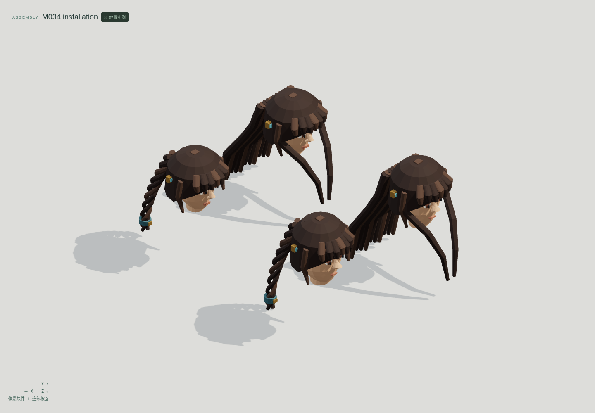
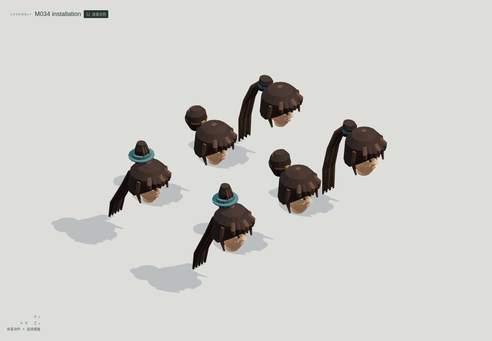
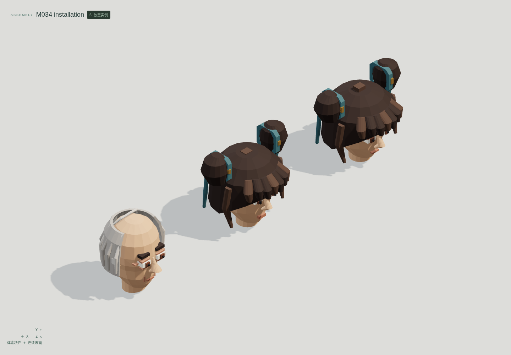
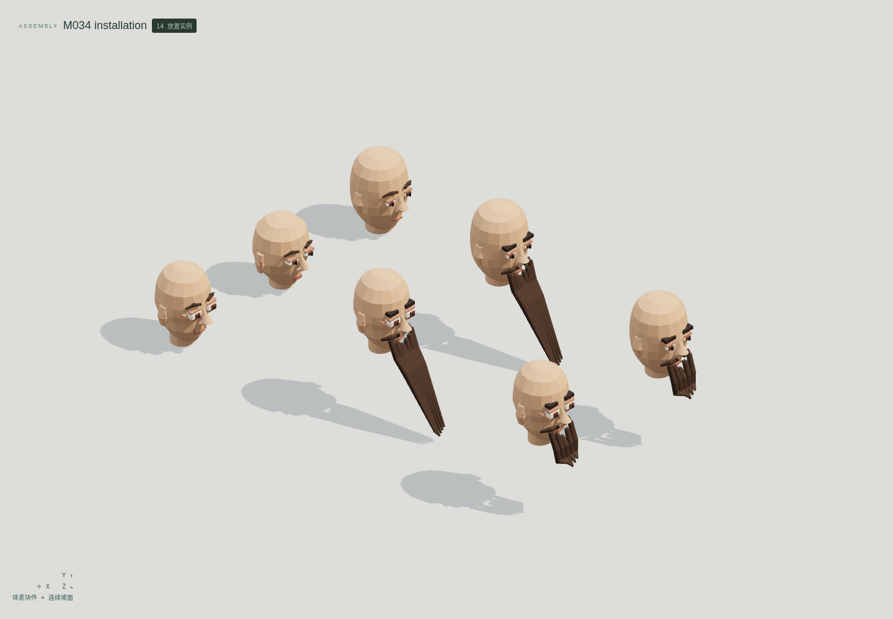
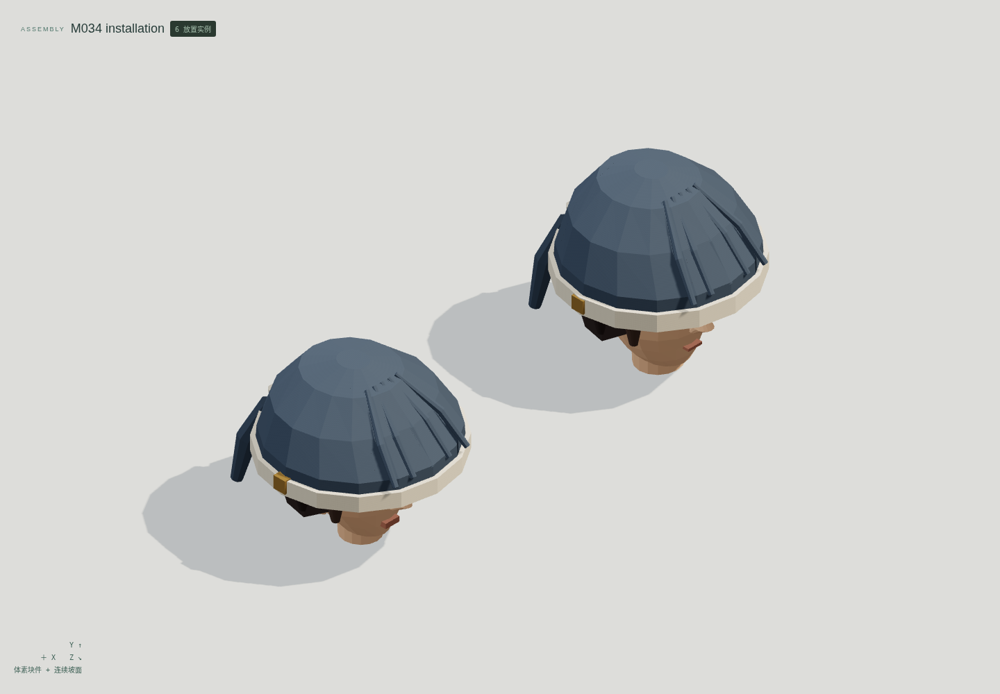
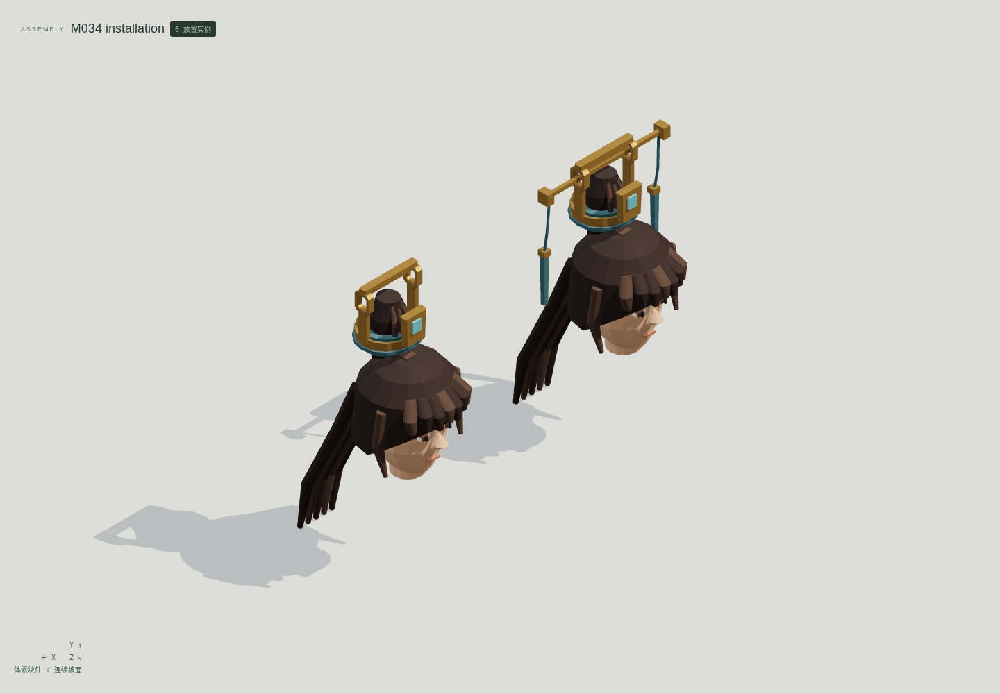
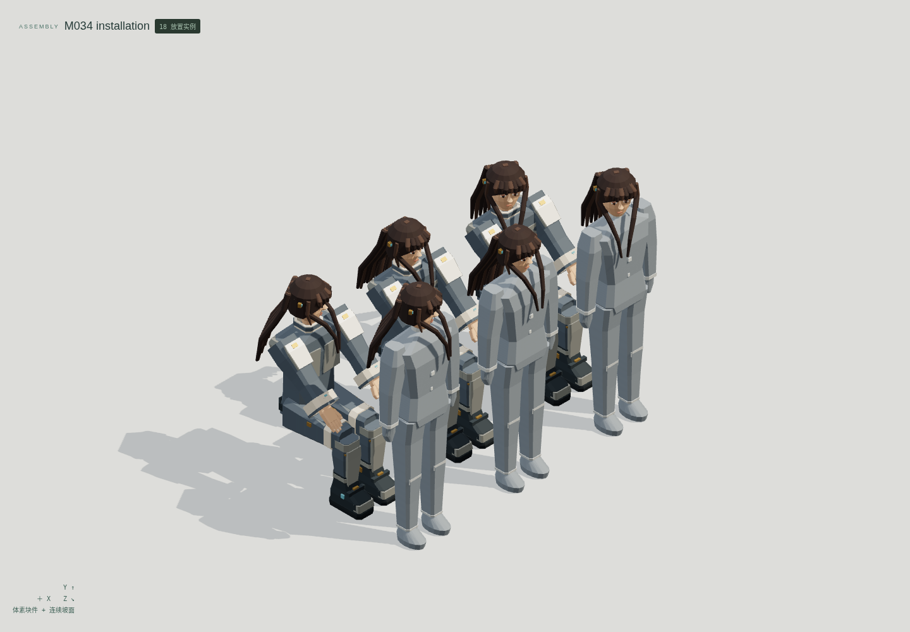

<!doctype html><meta charset="utf-8"><style>*{box-sizing:border-box}body{margin:0;background:#e2e4df;color:#263c34;font:20px system-ui}header,footer{padding:26px 34px}h1{margin:0 0 12px;font-size:32px}main{display:grid;grid-template-columns:1fr 1fr}figure{margin:0;border:1px solid #bec5bd;background:#eceeea}img{display:block;width:100%}figcaption{padding:14px 24px}figure:last-child{grid-column:1/3;margin:0 25%}</style><header><h1>云山 M034 · 头发与穿戴组合</h1>12 个独立母版 · 24 个形态 · 7 组真实编辑器装配<br>最小细节体素；发束、斜面与服饰曲面使用连续网格</header><main><figure><figcaption>披肩长发 / 三股编辫 · 成人与儿童</figcaption></figure><figure><figcaption>马尾 / 盘髻 / 束冠高髻</figcaption></figure><figure><figcaption>儿童双髻 / 老年稀疏发</figcaption></figure><figure><figcaption>短须 / 长须 / 三年龄眉弓</figcaption></figure><figure><figcaption>软帽与独立头部、短发</figcaption></figure><figure><figcaption>插簪 / 抽簪 · 实际高髻安装</figcaption></figure><figure><figcaption>±30° 转头 · 站姿与作者静态坐姿</figcaption></figure></main><footer>头部及身体来自另存的既有母版，不重复计数。转头为单关节刚性姿态，坐姿为保留源组件的静态研究；没有软发动力学或原游戏绑定。技术候选，人工美术验收 0。</footer>